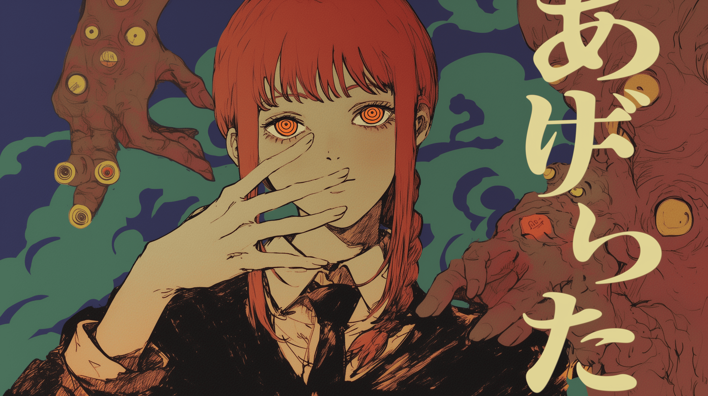
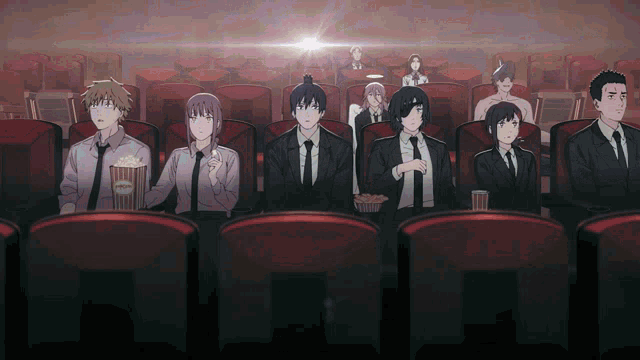

藤本タツキ · JUMP+ · FAN WIKI
Chainsaw
Man
チェンソーマン
Entre no mundo brutal e caótico de Chainsaw Man. Dívidas, demônios e um garoto que trocou o coração por uma motosserra.

“Eu quero passar manteiga no pão.
Isso é tudo que eu quero.”
2018
Início do mangá週刊少年ジャンプ
MAPPA
Estúdio do animeアニメ制作
12
Episódios da 1ª temporada第一期
∞
Demônios pra caçar悪魔

壁紙
Wallpapers
Baixe as artes em alta e favorite as suas.

視聴
Onde assistir
Anime, mangá digital e mídia física.